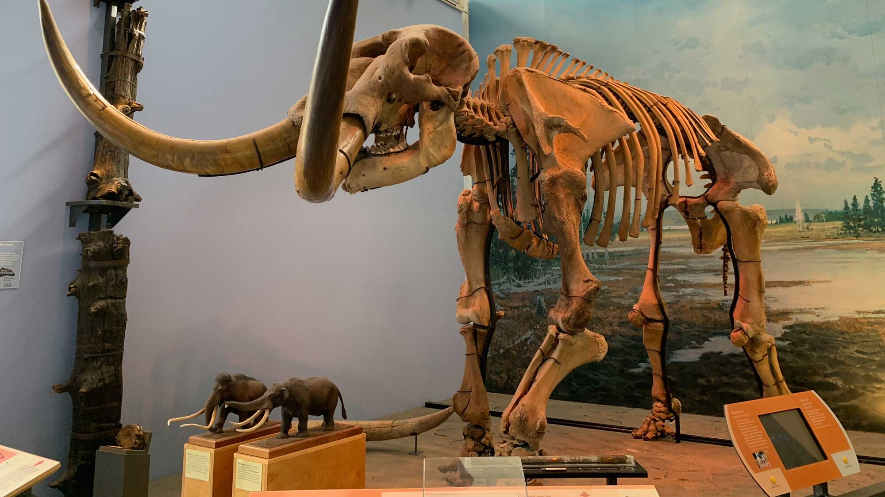
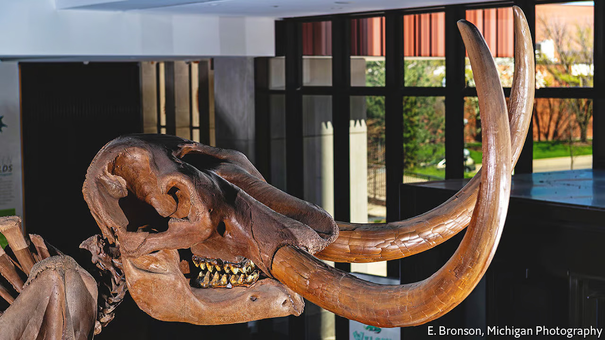

The Mastodon; a beautiful creature and close relative of the Mammoth and the Modern Day Elephant. During its reign, it roamed the lands that would eventually become North America. Its name derives from the Greek words "Mastos" and "Odont" which mean "nipple" and "tooth" respectively. This name was chosen due to the unique cone-like cusp seen on the teeth, differentiating it from its cousins like the Mammoth.

PHYSICAL DESCRIPTION (from top to bottom)

LOW DOMED SKULL
SMALL EARS
LONG TUSKS THAT GROW PARALLEL AND CURVE UPWARD
GRINDING MOLARS WITH A CONE-LIKE CUSP
LONG BODY
PILLAR-LIKE LEGS
REDDISH-BROWN FUR